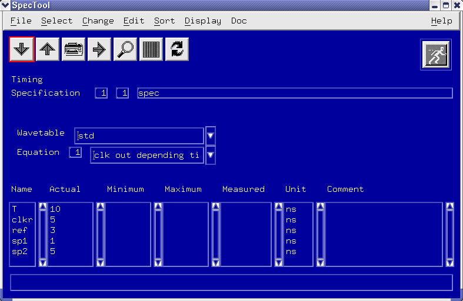
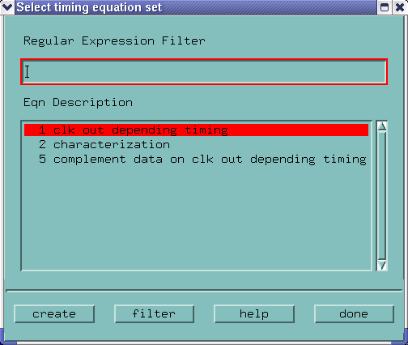
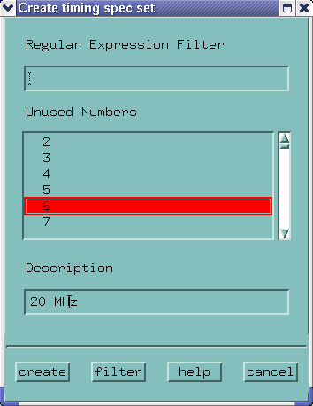
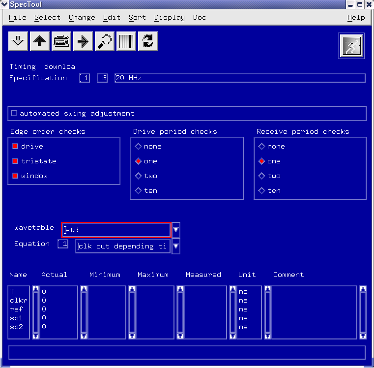
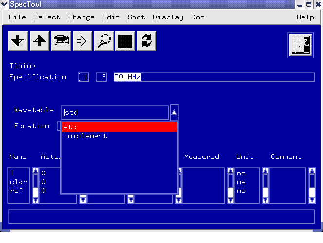
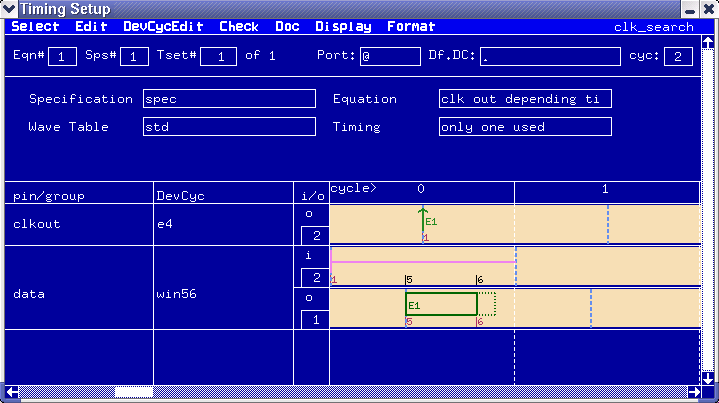
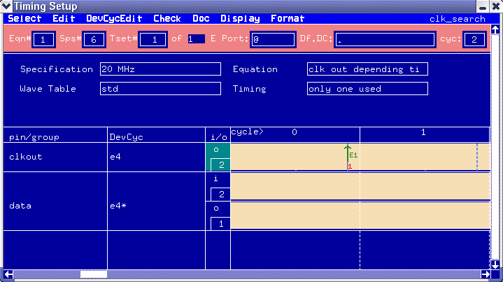

Defining the spec sets
You are now ready to define a set/sets of values for the variables you have just declared - a SPECSET, or specification set. This is done using a dedicated tool - the Spec Tool.
About this task
Unit conflict between EQNSET and SPECSET
If one or more of the loaded SPECSET contain units different to the units that are defined in the referenced EQNSET, SmarTest displays the following warning window. This may happen, for example, after importing setups converted by STIL reader with version 2.1 or earlier.
WARNING: Unit for spec variable "<variable>" in EQNSET <no>, SPECSET <no> is not consistent (EQNSET unit: [<unit>], SPECSET unit: [<unit>]). Only EQNSET units will be used. To overwrite SPECSET units with EQNSET units, press "Download" and then save the setup. To keep SPECSET units, edit EQNSETs and set the same units as in SPECSETs.
Follow the procedure given in the warning window (for details on the spec tool interface, refer to The Spec Tool window):
- Use units defined in the equation based setup:
- On the Spec Tool click the Downloadbutton.
- On the menu click .
- Use units defined in the SPECSET setup:
- Edit the equation based setup file.
- Refer to Equation based timing setup and Equation based level setup.
Procedure
- To launch the Spec Tool, in the Timing Setup window, click the menu .
A screen similar to that shown below appears.

Within this window you define which equation set you are using, which wavetable, which specification set, and the values you are using for each specification set.
- Click Create New Specification in the Change pulldown menu.
A screen similar to that shown below appears.

If you do not have any existing specification sets you must create one.
The screen above lists all currently defined equation sets.
- Highlight your desired equation set, and click create.
A screen similar to that shown below appears.

The screen shown above lists all unused numbers (1 to 99) for the specification sets.
- Highlight a number and, if necessary, key in a description for your specification.
By default the first unused number will be highlighted.
The description is to help you. It might typically be a reference to the speed used in the specification settings; 40MHz std, for example.
- Repeat the last step as often as required (for each testing speed. for example), and click
done when satisfied with your setup.
The main Spec Tool screen reappears. See the figure below.

- A specification set must have an associated equation set and wavetable. Now you could
select your desired wavetable from the pull down menu shown as the figure below.

The final part of defining the SPECSET, is giving values - initial (or actual), then minimum and maximum limits to the search range - to each of the variables you defined in the equation editor. These values are entered in the lower table section of the window.
The following steps describe one method for setting up/changing spec values. If large numbers of specs and/or specification sets are being used, a more efficient way of changing values is given in Changing Spec Values.
- For any given specification, double-click the Actual field to the right it and key in an initial value.
- Press return when finished.
- Repeat this procedure, but for the minimum and maximum values of the chosen variable.
- If necessary, key in an appropriate comment in the space provided.
- If the unit of measurement is specified in the Equation file, the Unit column will already have been filled in, and remains non-editable. If this is not the case, key in a value for the unit of measurement for the variable.
- Repeat step 7 to 11 until all variables have been set up appropriately.
- If necessary at this stage, set up the checking features of the Spec Tool.
You have now created your specification sets.
- When satisfied with your setup, click Download from within the
File pulldown menu to download these values to the test system.
Once again, any errors (caused by evaluation, for example) will be reported in the report window.
Note Remember that if you want to have your timing specification file available at a later stage, you must either save it from within the wavetable editor, or save the Timing Setup, from within the Test Program Explorer. This can also be useful in creating a "template" for later use. - If necessary, save your Timing Setup.
The setup that is now defined can be seen in the Timing Setup window. Equation and specification information for the screen above can be obtained by selecting Show Eqns & spec Results in the File pulldown menu. The following diagram shows the appearance of the Timing Setup for the example device.

- If necessary, change any of the edges by,
- clicking the edge and dragging it to a new position.
As soon as you do this, the top area of the window changes color to indicate that the original settings have changed. Compare the screen above with that of the figure below, for example.
e1 has been changed from that in the figure above.

- Select Edge Delay in the Select pulldown menu, and edit the appropriate edge.
- clicking the edge and dragging it to a new position.
Functional changes
- Introduced before SmarTest 6.3.2